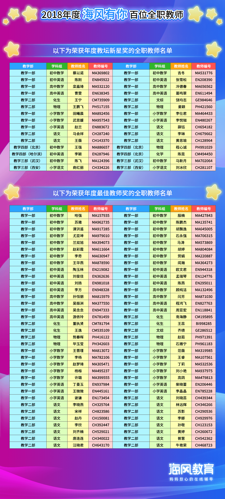

每一位海风人都在海风这个平台上面浇筑自己的心血，培育我们的学子，我们的学员来到海风，你陪他们走过了青春最美好的一段，走到未来。
2019到来之际，我们要感谢全体海风老师，是你们在我们学员需要一滴水的时候，给了他们一片海；是你们在每一位学员需要一片叶子的时候，给了他们一片森林。
青春年代，我们都遇见过一位让我们感恩念想的老师，而今天，你们成为了自己心中想遇见过的人。
评选百位优秀教师，真的很难。难的是那么多优秀的老师，我们都想选上。可惜授课中心的界面，放！不！下！（此时要DISS我们的IT葛格）只能放下百名优秀老师的名字。 教学管理团队，绞尽了脑汁、熬光了头发，眼睛的度数加深了、脸上的眉头更紧了，口水也干了，泪水也枯了。难啊，一眼望去全是优秀。
这位也优秀，那位也优秀。TA完美、TA无暇；TA贪黑为学员答题解惑，TA起早为学员备课改题；TA兢兢业业，TA无私奉献；TA为学员放弃了每晚敷面膜的好习惯、TA为学员放弃健硕的身材；TA素颜了，TA胖了。
我们的青春，无悔了。
要在无数无数优秀的老师中选出百名，只是选出了代表我们这个群体的人。这百名老师，既是你们自己，也是海风致力于线上一对一教育事业的每个人。线上一对一是新时代新兴的教学事业，我们是新星教育的开创者，我们正行走在让未来的我们骄傲的路上。
—致每一位海风人
